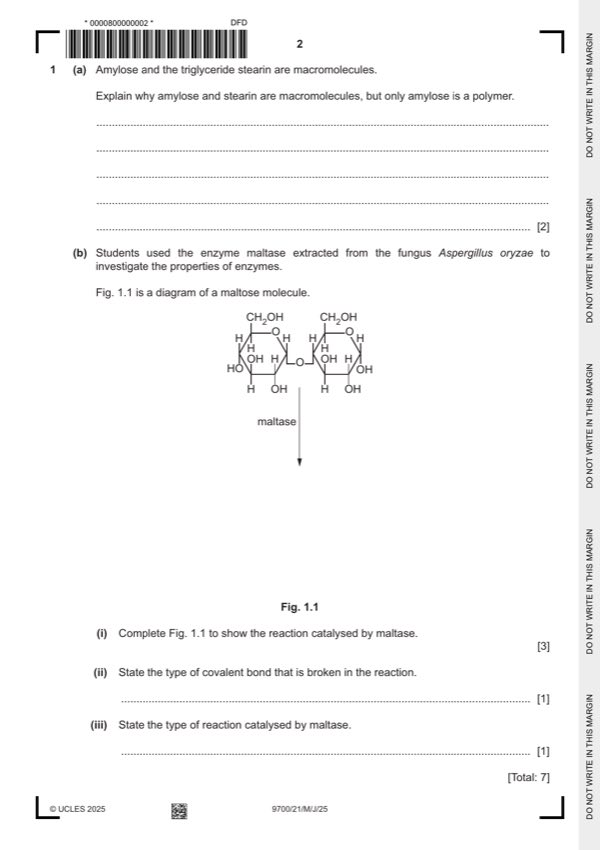

Question 1

Original paper page 2
Part 1(a) — solution
macromolecule 2
(both are) large / AW, molecules / size / (molecular) mass ;
A composed of, many / AW, atoms
I composed of more than one molecule
polymer
composed of, many / three or more / more than two / repeated / repeating, subunits / units / monomers / residues / alpha
glucose ;
A many of the same / similar / chain of … for repeated
I molecules
Mark points
- Include the ideas shown in the solution above.
Part 1(b)(i) — solution
1 α- / alpha-, glucose molecule on left with –OH on C1 facing downwards ; 3
Mark points
- Include the ideas shown in the solution above.
Part 1(b)(ii) — solution
glycosidic ; 1
A glucosidic
I incorrect detail of the bond, e.g. β- / beta- / α- / alpha-,1, 6
Mark points
- Include the ideas shown in the solution above.
Part 1(b)(iii) — solution
hydrolysis ; 1
University Press & Assessment 2025 Page 8 of 16
9700/21 Cambridge International AS & A Level – Mark Scheme May/June 2025
Mark points
- Include the ideas shown in the solution above.
Part 1 — solution
can take, quantitative / numerical, readings / results ;
Mark points
- Include the ideas shown in the solution above.
Part 1 — solution
protects mRNA from being, broken down / degraded / damaged, by enzymes ;
A protects mRNA from enzyme action
Mark points
- Include the ideas shown in the solution above.
Part 1 — solution
gene / RNA, splicing ;
A primary transcript splicing
R DNA splicing / mRNA splicing / genetic splicing
Mark points
- Include the ideas shown in the solution above.
Part 1 — solution
allows DNA replication to, occur many times ;
Mark points
- Include the ideas shown in the solution above.
Part 1 — solution
cytokines stimulate, clonal expansion / division (by mitosis), of, T-lymphocytes / B-lymphocytes ;
A T-cells / B-cells
A T-helper cells / T-killer cells
Mark points
- Include the ideas shown in the solution above.
Part 1 — solution
most water (in xylem) goes to the leaves taking (dissolved) phosphate ions with it ;
Mark points
- Include the ideas shown in the solution above.
Part 1 — solution
phosphate ions transported in the phloem move, out of the leaf / into stem ;
Mark points
- Include the ideas shown in the solution above.
Part 1 — solution
(dissociation) curve shifts to the right ;
I curve shifts downwards / graph if given for curve
Mark points
- Include the ideas shown in the solution above.